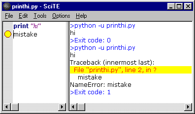

|
|
SciTE Documentation |
| Frequently Asked Questions Scripting |
Text editing in SciTE works similarly to most Macintosh or Windows editors with the added feature of automatic syntax styling. SciTE can hold multiple files in memory at one time but only one file will be visible. SciTE's initial configuration only allows one file to be in memory at once but this can be modified by changing the value of the buffers property. Rectangular regions of text can be selected in SciTE by holding down the Alt key on Windows or the Ctrl key on GTK+ while dragging the mouse over the text.
There are two panes in SciTE, the editing pane and the output pane. The output pane is located either to the right of the editing pane or below it. Initially it is of zero size, but it can be made larger by dragging the divider between it and the editing pane. The Options | Vertical Split command can be used to move the output pane beneath the editing pane.
SciTE can perform commands to compile or run source files with the output from these commands directed into the output pane.
For example, if Python is installed on the machine, open a new document, type:
print "Hi"
as that document's text.
Save the document as printhi.py.
print
"hi"
Perform the Tools | Go command.
>python -u printhi.py
hi
>Exit code: 0
The first blue line is from SciTE showing the command it will use to run the program. The black
line is the output from running the Python program. The last blue line is from SciTE showing
that the program has finished and displaying its exit code. An exit code of zero indicates a
successful run. SciTE partially understands the error messages produced by Python, GCC, Visual C++, Borland C++, PHP and other tools which use the same format as one of these. To see this, add a mistake to the Python file by adding a second line to make the file:
print
"hi"
mistake
Perform the Tools | Go command. The results should look like:
>python -u printhi.py hi Traceback (innermost last): File "printhi.py", line 2, in ? mistake NameError: mistake >Exit code: 1
While it is easy to see where the problem is in this simple case, when a file is larger the Tools | Next Message command can be used to view each of the reported errors. Upon performing Tools | Next Message, the first error message in the output pane is highlighted with a yellow background, and an error indicator is displayed for the appropriate line in the editing pane. The caret is moved to this line and the pane is scrolled if needed to show the line. SciTE now looks like this:
SciTE understands both the file name and line number parts of error messages in most cases so can open another file (such as a header file) if errors were caused by that file. This feature may not work where the file name is complicated by containing spaces or ".."
If command execution has failed and is taking too long to complete then the Tools | Stop Executing command can be used.
Tools can be executed in various modes by SciTE which are called "subsystems". Different subsystems are supported on Windows and GTK+. The default subsystem is 0.
| Windows | ||
| 0 | console | Command line programs Do not use for GUI programs as their windows will not be visible. |
| 1 | windows | Programs that create their own windows |
| 2 | shellexec | Run using ShellExecute A good way to open HTML files and similar as it handles this similarly to a user opening the file from the shell. |
| 3 | lua director | Internal extension or director extension |
| 4 | htmlhelp | Open in HtmlHelp program Two part command separated by ! with the first part being the topic to search for and the second the name of the help file |
| 5 | winhelp | Open with WinHelp function Two part command similar to subsystem 4 |
| GTK+ | ||
| 0 | console | Execute tool and wait for it to finish |
| 2 | shellexec | Execute in background |
Command line arguments to SciTE include file names, commands and properties. Commands and properties are preceded by "-" and are differentiated by the use in commands of ':' as the first character that is not '.' or alphabetic. Properties use the syntax used in property set files and override any properties set in property files. If there is no value given for a property, it is set to 1. Double quotes may be placed around arguments that contain spaces but they must be placed around the whole argument, not just around a file name, so "-open:x y.txt" works but -open:"x y.txt" doesn't. On Linux, the standard shell quoting is available. The "-p" argument causes SciTE to print the file and then exit.
For Windows:
The command line arguments "-" and "--" (without the quotes) are special in that they read the
stdin stream into the last buffer ("-"), or the output pane ("--"))
The command line argument "-@" (without the quotes) is special in that file names are read from stdin
and opened.
Note: when reading stdin into the output pane, when the property split.vertical is 0, the
output pane is increased to its maximum height. When the property split.vertical is 1, the output pane is
increased to approximately half of the screen width.
Note: If stdin is not redirected, these arguments are effectively ignored.
For example,
| Command | Argument |
|---|---|
| close: | |
| cwd: | change working directory |
| find: | search text |
| goto: | line number[,column number] |
| open: | file name |
| quit: | |
| replaceall: | search text\000replacement text |
| saveas: | file name |
| Escape Sequence | Meaning |
|---|---|
| \\ | backslash |
| \a | bell |
| \b | backspace |
| \f | form feed |
| \n | new line |
| \r | carriage return |
| \t | tab |
| \v | vertical tab |
| \<ooo> | octal number specified by 1, 2, or 3 digits |
| \x<hh> | hexadecimal number specified by 2 digits |
Command line arguments are evaluated left to right in two phases because opening files requires the user interface to be available and there is also a need to set some user interface properties before the user interface is displayed. The first phase process arguments until just before the first file name would be opened. The second phase processes the remaining arguments.
So, if you need to perform e.g. a find: or a goto: command on a file, you must put the command after the filename, to allow SciTE to open the file before performing the command.
For Windows:
If any simple file name on the command line matches a directory name, the file open dialog appears - this is dependant upon the property
"open.dialog.in.file.directory"
If the property "buffers" is greater than one and the file name matches either a existing file or by means of a wildcard search, one or more files, the
matching files are loaded up to the property "buffers" count. Directories are not considered a match in this case
If the file name is an extension, optionally preceded by a path, and no such simple file name exists, the file open dialog appears, with the given extension as
the filter.
If the file name contains no extension, the property "source.default.extensions" is used to provide default extensions to attempt to match the file name to an
existing file.
SciTE may be configured to use between 1 and 100 buffers each containing a file. The default is 1 and this effectively turns off buffers. With more than one buffer, the Buffers menu can be used to switch between buffers, either by selecting the file name or using the Previous (F6) and Next (Shift+F6) commands. Setting more than 10 buffers may cause problems as some menus are fixed in length and thus files beyond that length may not be accessible.
When all the buffers contain files, then opening a new file causes a buffer to be reused which may require a file to be saved. In this case an alert is displayed to ensure the user wants the file saved.
A session is a list of file names. You can save a complete set of your currently opened buffers as a session for fast batch-loading in the future. Sessions are stored as properties files with the extension ".session".
Use File | Load Session and File | Save Session to load/save sessions. You can turn on/off "last session autoloading" using SciTE properties variable "save.session".
If "buffers" variable is set to "0" session management is turned off.
Loading previously saved session will close your currently opened buffers. However you will not lose your edits, because you will be asked to save unsaved buffers first.
Opening a specific file from command line overrides "save.session" variable state. When you start SciTE loading a specific file from command line last session will not restore even if "save.session" variable is set to "1". This makes "save.session" safe to use - you will never open a couple of files when you are trying to open just one, specific file.
SciTE currently is able to syntax style these languages (* denotes support for folding):
Running and building commands for some of these languages have been set up but should be checked as they will have to be modified to work for many people.
To keep menus to a reasonable length some languages are included but have been commented out in global options. These should be enabled by removing the comment character '#'.
Language settings are determined from the file extension but this can be changed by selecting another language from the Language menu. The language menu can be changed with the menu.language property.
SciTE has options to allow searching for words, regular expressions, matching case, in the reverse direction, wrapping around the end of the document. C style backslash escapes which are listed in the command line arguments section, may be used to search and replace control characters. Replacements can be made individually, over the current selection or over the whole file. When regular expressions are used tagged subexpressions can be used in the replacement text. Regular expressions will not match across a line end.
SciTE supports basic regular expressions with tagging.
SciTE uses the default key bindings defined in Scintilla, so keyboard commands in SciTE mostly follow common Windows and GTK+ conventions. All move keys (arrows, page up/down, home and end) allows to extend or reduce the stream selection when holding the Shift key, and the rectangular selection when holding the Shift and Alt keys. Some keys may not be available with some national keyboards or because they are taken by the system such as by a window manager on GTK+. The user.shortcuts setting may be used to assign a key to a function. Note that Home key behaviour is changed by the vc.home.key option. Keyboard equivalents of menu commands are listed in the menus. Some less common commands with no menu equivalent are:
| Magnify text size. | Ctrl+Keypad+ |
| Reduce text size. | Ctrl+Keypad- |
| Restore text size to normal. | Ctrl+Keypad/ |
| Cycle through recent files. | Ctrl+Tab |
| Indent block. | Tab |
| Dedent block. | Shift+Tab |
| Delete to start of word. | Ctrl+BackSpace |
| Delete to end of word. | Ctrl+Delete |
| Delete to start of line. | Ctrl+Shift+BackSpace |
| Delete to end of line. | Ctrl+Shift+Delete |
| Go to start of document. | Ctrl+Home |
| Extend selection to start of document. | Ctrl+Shift+Home |
| Go to start of display line. | Alt+Home |
| Extend selection to start of display line. | Alt+Shift+Home |
| Go to end of document. | Ctrl+End |
| Extend selection to end of document. | Ctrl+Shift+End |
| Go to end of display line. | Alt+End |
| Extend selection to end of display line. | Alt+Shift+End |
| Expand or contract a fold point. | Ctrl+Keypad* |
| Create or delete a bookmark. | Ctrl+F2 |
| Go to next bookmark. | F2 |
| Select to next bookmark. | Alt+F2 |
| Find selection. | Ctrl+F3 |
| Find selection backwards. | Ctrl+Shift+F3 |
| Scroll up. | Ctrl+Up |
| Scroll down. | Ctrl+Down |
| Line cut. | Ctrl+L |
| Line copy. | Ctrl+Shift+T |
| Line delete. | Ctrl+Shift+L |
| Line transpose with previous. | Ctrl+T |
| Selection duplicate. | Ctrl+D |
| Find matching preprocessor conditional, skipping nested ones. | Ctrl+K |
| Select to matching preprocessor conditional. | Ctrl+Shift+K |
| Find matching preprocessor conditional backwards, skipping nested ones. | Ctrl+J |
| Select to matching preprocessor conditional backwards. | Ctrl+Shift+J |
| Previous paragraph. Shift extends selection. | Ctrl+[ |
| Next paragraph. Shift extends selection. | Ctrl+] |
| Previous word. Shift extends selection. | Ctrl+Left |
| Next word. Shift extends selection. | Ctrl+Right |
| Previous word part. Shift extends selection | Ctrl+/ |
| Next word part. Shift extends selection. | Ctrl+\ |
To use an abbreviation, type it and use the Expand Abbreviation command or the Ctrl+B key. The abbreviation is replaced by an expansion defined in the Abbreviations file. You can open the Abbreviations file with a command in the Options menu and add abbreviations. There is a default abbreviations file but a different abbreviations file can be set for particular file extensions.
Each line in the files looks like "abbreviation=expansion".
The abbreviations names can have any character (except perhaps control chars,
surely for CR and LF), including high Ascii chars (accented chars).
Names have properties files limits: they cannot start with sharp (#) or space or tab
(but can have spaces inside); and they cannot have '=' character inside.
Abbreviations names are limited to 32 characters. It is probably enough for
abbreviations...
An expansion may contain new line characters indicated by '\n' and
a caret position indicated by the '|' character. To include a literal '|'
character, use '||'.
Some simple examples are included in the distributed Abbreviations file.
When expanding, the names don't need to be separated from the previous text.
Ie. if you define 'é' as 'é', you can expand it inside a word.
If a name is the ending of another one, only the shorter will ever be expanded.
Ie. if you define 'ring' and 'gathering', the later will see only the 'ring' part expanded.
SciTE supports folding for many languages (see the list of languages understood by SciTE for more information.) Fold points are based upon indentation for Python and on counting braces for the other languages. The fold point markers can be clicked to expand and contract folds. Ctrl+Shift+Click in the fold margin will expand or contract all the top level folds. Ctrl+Click on a fold point to toggle it and perform the same operation on all children. Shift+Click on a fold point to show all children.
Much of SciTE's behaviour can be changed by editing the properties files.
There are four properties files used:
Settings in the local properties file override those in the directory properties file which overrides those in the user properties file which override those in the global properties files. Environment variables are also available as properties and these are overridden by an explicit setting in one of the properties files.
The directory properties file can be used as project options file where user commands and compile, build commands should work in the same manner in subdirectories of a project. The benefit is that local properties files in subdirectories can be replaced by one properties file which is located at the root of the project. The evalution of the directory properties file is disabled by default and must be enabled by setting the variable properties.directory.enable to 1 in the user or global properties file.
The user properties file is intended for customisation by the user, leaving the global properties file to contain the default options distributed with SciTE. The main use of the local properties files is to change the effects of the Compile, Build and Go commands for the files in a directory. For example, I use the javac compiler from the Java Development Kit for most work, so SciTEGlobal.properties sets the command for compiling .java files to "javac". If I want to use the jvc compiler for the files in one directory, then the SciTE.properties file in that directory contains an entry setting the command to "jvc".
On Windows, the global properties file is located in the directory of the executable. The user properties file is looked for in the user profile directory as set in the USERPROFILE environment variable, or in the directory of the executable if USERPROFILE is not set. For GTK+ the user properties file is found in the user's home directory and the global properties in a directory set at build time - normally /usr/share/scite. If the "SciTE_HOME" environment variable is set on either Windows or GTK+ then it is where both the global and user properties files are found.
There are commands in the Options menu for opening each of the properties files.
The files are in approximately the same format as Java properties files which have a simple text format. Lines that start with '#' or that are completely blank are comments. Other lines are of the form
variable=value
For long values, a '\' character at the end of the line continues that value on the next line. Space characters are significant so x =1 defines a variable called "x ". Values may include the values of other variables by using $(variablename). There are some variables set by the environment to access the name of the current file as well:
| Name | Meaning |
|---|---|
| FilePath | full path of the current file |
| FileDir | directory of the current file without a trailing slash |
| FileName | base name of the current file |
| FileExt | extension of the current file |
| FileNameExt | $(FileName).$(FileExt) |
| SessionPath | full path of the current session |
| CurrentSelection | value of the currently selected text |
| CurrentWord | value of word which the caret is within or near |
| Replacements | number of replacements made by last Replace command |
| SelectionStartColumn | column where selection starts |
| SelectionStartLine | line where selection starts |
| SelectionEndColumn | column where selection ends |
| SelectionEndLine | line where selection ends |
| CurrentMessage | most recently selected output pane message |
| SciteDefaultHome | directory in which the Global Options file is found |
| SciteUserHome | directory in which the User Options file is found |
| SciteDirectoryHome | directory in which the Directory Options file is found |
Some features use file name patterns to see which variable to use. For example, the lexer
variable can be specialised for a particular file, or a group of files based upon wildcard
matching so:
lexer.makefile=makefile indicates that the lexer called "makefile" should be used on
files called "makefile".
lexer.*.cxx=cpp indicates that the lexer called "cpp" should be used on files with a
"cxx" extension.
Variable substitution is available on the left hand side of file pattern assignments and
look like this:
file.patterns.html=*.html;*.htm;*.asp;*.shtml
command.go.$(file.patterns.html)=file://$(FilePath)
Wildcard matching only works where the wildcard is at the start of a file specification, so "*.mak" will match "proj.mak" but "Makefile*" will not match "Makefile.in".
The 'import' statement includes a properties file as if the text were inline at that point. The imported properties file must be in the same directory as the current file and a properties extension is assumed. Therefore a "import Lua" statement in c:\os\scite\bin\SciTEGlobal.properties will import c:\os\scite\bin\Lua.properties.
The 'if' statement takes one argument which is a symbol that may be defined earlier in this property set file or in a base property set. If the symbol evaluates to '0' then the test fails. An empty string or not present symbol evaluates to 0. Into the very top property set is inserted one of 'PLAT_GTK' with value '1' or 'PLAT_WIN' with value '1'. If the test succeeds then following indented statements are executed. When a non-indented statement is found the if clause is finished. Only simple set statements are allowed in if clauses. The evaluation of if statements occurs at read time, not at evaluation time.
SciTE has 4 properties $(1) .. $(4) which can be used to run commands with changeable parameters. To set the parameter values, use the View | Parameters command to view the modeless Parameters dialog which shows the current values of these parameters and allows setting new values. The accelerator keys for the main window remain active while this dialog is displayed, so it can be used to rapidly run a command several times with different parameters. Alternatively, a command can be made to display the modal Parameters dialog when executed by starting the command with a '*' which is otherwise ignored. If the modeless Parameters dialog is already visible, then the '*' is ignored.
SciTE will automatically detect the encoding scheme used for Unicode files that start with a Byte Order Mark (BOM). The UTF-8 and UCS-2 encodings are recognized including both Little Endian and Big Endian variants of UCS-2.
UTF-8 files will also be recognised when they contain a coding cookie on one of the
first two lines. A coding cookie looks similar to "coding: utf-8" ("coding" followed by ':'
or '=', optional whitespace, optional quote, "utf-8") and is normally contained in
a comment:
For other encodings set the code.page and character.set properties.
Some properties are only available on Windows or GTK+.
|
position.left position.top position.width position.height |
Set the initial window size and position. If these are omitted then the environment's defaults are used. If the width or height are -1 then the window is maximised. | ||||||||||||||||||||||||||||||||||
| position.tile | If there is another copy of SciTE open, set the initial window position to be with the left side at position.left + position.width so that most of the time you can see both copies at once without overlap. Works nicely if position.left set to 0 and position.width set to half of the screen width. | ||||||||||||||||||||||||||||||||||
| buffers |
Set to a number between 1 and 100 to configure that many buffers.
Values outside this range are clamped to be within the range.
The default is 1 which turns off UI features concerned with buffers. This value is read only once, early in the startup process and only from the global properties files. So after changing it, restart SciTE to see the effect. |
||||||||||||||||||||||||||||||||||
| buffers.zorder.switching | This setting chooses the ordering of buffer switching when Ctrl+Tab pressed. Set to 1, the buffers are selected in the order of their previous selection otherwise they are chosen based on the buffer number. | ||||||||||||||||||||||||||||||||||
|
are.you.sure are.you.sure.for.build |
The classic GUI question. Normally, when SciTE is about to close a file which has unsaved
edits it asks this annoying question. To turn off the question, set are.you.sure to 0 and
files will be automatically saved without bothering the user. To abandon edits to a file
use the New command. New always asks "Are you sure?" giving an opportunity to not save
the file. When running or building a file, its most likely that you want the file to be saved first. To enable a confirmation dialog for performing Compile, Build or Go commands, set are.you.sure.for.build=1. |
||||||||||||||||||||||||||||||||||
| save.all.for.build | SciTE normally saves the current buffer when performing a Compile, Build, or Go command. To save all buffers set save.all.for.build=1 | ||||||||||||||||||||||||||||||||||
|
view.whitespace view.indentation.whitespace |
Setting view.whitespace to 1 makes SciTE start up with whitespace visible. Setting view.indentation.whitespace to 0 hides visible whitespace inside indentation. |
||||||||||||||||||||||||||||||||||
|
whitespace.fore whitespace.back |
Sets the colours used for displaying all visible whitespace, overriding any styling applied by the lexer. | ||||||||||||||||||||||||||||||||||
|
view.indentation.guides view.indentation.examine view.indentation.examine.filepattern highlight.indentation.guides |
Setting view.indentation.guides to 1 displays dotted vertical lines within indentation white
space every indent.size columns. Setting view.indentation.examine to 1 to display guides within real indentation whitespace only, 2 according to the next non-empty line (good for Python) or 3 according to both the next and previous non-empty lines (good for most languages). Setting highlight.indentation.guides to 1 highlights the indentation guide associated with a brace when that brace is highlighted. |
||||||||||||||||||||||||||||||||||
| view.eol | Setting this to 1 makes SciTE display the characters that make up line ends. This looks similar to (CR), (LF), or (CR)(LF). This is useful when using files created on another operating system with software that is picky about line ends. | ||||||||||||||||||||||||||||||||||
| eol.mode |
The default EOL mode (characters that make up line ends)
depends on your platform.
You can overwrite this behaviour by setting the property to
LF for UNIX format
As you see, Windows combines the best of the other worlds ;-)
CR for Macintosh format CRLF for DOS/Windows format |
||||||||||||||||||||||||||||||||||
| eol.auto | This setting overrides the eol.mode value and chooses the end of line character sequence based on the current contents of the file when it is opened. The line ending used the most in the file is chosen. | ||||||||||||||||||||||||||||||||||
|
blank.margin.left blank.margin.right |
There is a blank margin on both sides of the text. It is drawn in the background colour of default text. This defaults to one pixel for both left and right sides but may be altered with these settings. | ||||||||||||||||||||||||||||||||||
| margin.width | Setting this to a number makes SciTE display a selection margin to the left of the text. The value is the number of pixels wide the selection margin should be. Line markers are displayed in the selection margin area. | ||||||||||||||||||||||||||||||||||
|
fold.margin.colour fold.margin.highlight.colour |
These two properties defined the fold margin colour and fold margin highlight colour. If they are not defined (left commented out) the colours for the fold margin will default to a reasonable pair of colours. On Windows, the system colours are used to make the fold margin appear like the background of scroll bars. As an example, with fold.margin.colour=#FF0000 and fold.margin.highlight.colour=#0000FF, the fold margin is a mixture of red and blue. | ||||||||||||||||||||||||||||||||||
| full.screen.hides.menu | Setting this to 1 hides the menu bar when the Full Screen command is used on Windows. On GTK+ the menu is always visible. | ||||||||||||||||||||||||||||||||||
| minimize.to.tray | Setting this to 1 minimizes SciTE to the system tray rather than to the task bar. | ||||||||||||||||||||||||||||||||||
|
line.margin.visible line.margin.width |
SciTE is able to display a column of line numbers to the left of the selection margin. Setting line.margin.visible to 1 makes this column visible at startup. The line.margin.width property controls how much space is reserved for the line numbers, in terms of the number of digits that can be displayed. To specify that the margin should expand if needed to accomodate larger line numbers, add a '+' after the number of digits, e.g. line.margin.width=3+. | ||||||||||||||||||||||||||||||||||
|
tabbar.visible tabbar.hide.one |
Setting tabbar.visible to 1 makes the tab bar visible at start up on Windows. The buffers property must be set to a value greater than 1 for this option to work. Setting tabbar.hide.one to 1 hides the tab bar until there is more than one tab. Works on Windows and GTK+ 2.x but not GTK+ 1.x. | ||||||||||||||||||||||||||||||||||
| tabbar.multiline | Setting tabbar.multiline uses multiple lines for the tab bar | ||||||||||||||||||||||||||||||||||
| toolbar.visible | Setting this to 1 makes the tool bar visible at start up. | ||||||||||||||||||||||||||||||||||
| toolbar.detachable | Setting this to 1 makes the tool bar detachable from the main window. | ||||||||||||||||||||||||||||||||||
| toolbar.usestockicons | SciTE has a built-in icon set for the toolbar, setting this to 1 makes SciTE more integrated in the GNOME desktop by using the icons provided by the current theme used in GNOME. | ||||||||||||||||||||||||||||||||||
| menubar.detachable | Setting this to 1 makes the menu bar detachable from the main window. | ||||||||||||||||||||||||||||||||||
| undo.redo.lazy | Setting this to 1 changes the technique used to determine when to enable or disable tool bar buttons to be less accurate. This may improve performance on slow machines. | ||||||||||||||||||||||||||||||||||
| statusbar.visible | Setting this to 1 makes the status bar visible at start up. | ||||||||||||||||||||||||||||||||||
|
statusbar.number statusbar.text.number |
The statusbar.text.1 option defines the information displayed in the status bar
by default on all platforms.
Property values may be used in this text using the $() syntax.
Commonly used properties are: ReadOnly, EOLMode, BufferLength,
NbOfLines (in buffer), SelLength (chars), SelHeight (lines).
Extra properties defined for the status bar are LineNumber, ColumnNumber, and
OverType which is either "OVR" or "INS" depending on the overtype status.
You can also use file properties, which, unlike those above, are not updated
on each keystroke: FileName or FileNameExt, FileDate and FileTime and
FileAttr. Plus CurrentDate and CurrentTime. On Windows only, further texts may be set as statusbar.text.2 .. and these may be cycled between by clicking the status bar. The statusbar.number option defines how many texts are to be cycled through. |
||||||||||||||||||||||||||||||||||
| use.palette | Setting this to 1 makes SciTE use a palette to enable it to display more colours on 8 bit displays. Without this option SciTE will only display with colours already available which is normally the 20 colour Windows system palette. The downside of turning on this option is that there will be some flashing as windows are activated. This option has no effect on GTK+ where a palette is always used. | ||||||||||||||||||||||||||||||||||
| buffered.draw | Setting this to 0 rather than the default 1 makes SciTE draw output directly to the screen rather than into a buffer bitmap first and then to the screen. Buffered drawing flickers less but is slower. | ||||||||||||||||||||||||||||||||||
| two.phase.draw | Two phase drawing is a better but slower way of drawing text. In single phase drawing each run of characters in one style is drawn along with its background. If a character overhangs the end of a run, such as in "V_" where the "V" is in a different style from the "_", then this can cause the right hand side of the "V" to be overdrawn by the background of the "_" which cuts it off. Two phase drawing fixes this by drawing all the backgrounds first and then drawing the text in transparent mode. Two phase drawing may flicker more than single phase unless buffered drawing is on. The default is for drawing to be two phase. | ||||||||||||||||||||||||||||||||||
|
load.on.activate save.on.deactivate |
The load.on.activate property causes SciTE to check whether the current file has been
updated by another process whenever it is activated. This is useful when another editor
such as a WYSIWYG HTML editor, is being used in conjunction with SciTE. The save.on.deactivate property causes SciTE to save the file whenever the SciTE application loses focus. This is useful when developing web pages and you want to often check the appearance of the page in a browser. |
||||||||||||||||||||||||||||||||||
| are.you.sure.on.reload | When both this and load.on.activate are set to 1, SciTE will ask if you really want to reload the modified file, giving you the chance to keep the file as it is. By default this property is disabled, causing SciTE to reload the file without bothering you. | ||||||||||||||||||||||||||||||||||
| reload.preserves.undo | When set to 1, reloading a file does not delete all the undo history. This is useful when load.on.activate is used in conjunction with filter commands. | ||||||||||||||||||||||||||||||||||
| check.if.already.open | This option allows opening files in an existing instance of SciTE rather than always opening a new instance. When this option is set and SciTE is started, it checks to see if there are any other instances of SciTE open. If there is, another instance is asked to open the file and become active and the new instance exits. On Windows, the instance with the Options | Open Files Here menu item checked opens the file. On GTK+, an arbitrary instance opens the file. | ||||||||||||||||||||||||||||||||||
| read.only | When this option is set then opened documents are initially read only. New files are not affected by this setting. | ||||||||||||||||||||||||||||||||||
| quit.on.close.last | If this option is set, SciTE will close when its last buffer has been closed, e.g. with File/Close. (By default, if this option is not set, SciTE will remain open and will create a new blank document when its last buffer is closed.) | ||||||||||||||||||||||||||||||||||
|
selection.fore selection.back selection.alpha |
Sets the colours used for displaying selected text. If one of these is not set then that attribute is not changed for the selection. The default is to show the selection by changing the background to light grey and leaving the foreground the same as when it was not selected. The translucency of the selection is set with selection.alpha. | ||||||||||||||||||||||||||||||||||
| caret.fore | Sets the colour used for the caret. | ||||||||||||||||||||||||||||||||||
|
caret.line.back caret.line.back.alpha |
Sets the background colour and translucency used for line containing the caret. Translucency ranges from 0 for completely transparent to 255 for opaque with 256 being opaque and not using translucent drawing code which may be slower. | ||||||||||||||||||||||||||||||||||
| caret.period | Sets the rate at which the caret blinks. The value is the time in milliseconds that the caret is visible before it is switched to invisible. It then stays invisible for the same period before appearing again. A value of 0 stops the caret from blinking. | ||||||||||||||||||||||||||||||||||
| caret.width | Sets the width of the caret in pixels. Only values of 1, 2, or 3 work. | ||||||||||||||||||||||||||||||||||
|
caret.policy.xslop caret.policy.width caret.policy.xstrict caret.policy.xeven caret.policy.xjumps caret.policy.yslop caret.policy.lines caret.policy.ystrict caret.policy.yeven caret.policy.yjumps |
If slop is set, we can define a slop value: width for xslop, lines for yslop. If strict is set, the policy is enforced... strictly. If jumps is set, the display is moved more energetically
so the caret can move in the same direction longer before the policy is applied again. If even is not set, instead of having symmetrical UZs,
the left and bottom UZs are extended up to right and top UZs respectively. See the table below to see how these settings interact. |
||||||||||||||||||||||||||||||||||
|
visible.policy.strict visible.policy.slop visible.policy.lines |
Determines how the display area is determined after a Go to command or equivalent such as a Find or Next Message. Options are similar to caret.policy.*. | ||||||||||||||||||||||||||||||||||
|
edge.mode edge.column edge.colour |
Indicates long lines. The default edge.mode, 0, does not indicate long lines. An edge.mode of 1 uses a vertical line to indicate the specified column and an edge.mode of 2 changes the background colour of characters beyond that column. For proportional fonts, an edge.mode of 2 is more useful than 1. | ||||||||||||||||||||||||||||||||||
| control.char.symbol | Sets the character to use to indicate control characters. If not set, control characters are shown as mnemonics. | ||||||||||||||||||||||||||||||||||
|
error.marker.fore error.marker.back |
The colours used to indicate error and warning lines in both the edit and output panes are set with these two values. If there is a margin on a pane then a symbol is displayed in the margin to indicate the error message for the output pane or the line causing the error message for the edit pane. The error.marker.back is used as the fill colour of the symbol and the error.marker.fore as the outline colour. If there is no margin then the background to the line is set to the error.marker.back colour. | ||||||||||||||||||||||||||||||||||
|
bookmark.fore bookmark.back bookmark.alpha |
The colours used to display bookmarks in the margin. If bookmark.fore is not set then a blue sphere is used. When the margin is turned off, bookmarks are shown by a change in the background colour of the line with the translucency set with bookmark.alpha. | ||||||||||||||||||||||||||||||||||
| find.mark | If set, then the Mark All command in the Find dialog will draw translucent boxes over each string found. | ||||||||||||||||||||||||||||||||||
| error.select.line | When a command execution produces error messages, and you step with F4 key through the matching source lines, this option selects the line where the error occurs. Most useful if the error message contains the column of error too as the selection will start at the column of the error. The error message must contain the column and must be understood by SciTE (currently only supported for HTML Tidy). The tab size assumed by the external tool must match the tab size of your source file for correct column reporting. | ||||||||||||||||||||||||||||||||||
| openpath.filepattern | Defines a path for the Open Selected Filename command in the File
menu. The path is searched if the selected filename doesn't contain an
absolute path or the file is not found in the document directory. The
directories in openpath are separated by ';' on Windows and ':' on GTK+. An openpath setting may look like:
openpath.*.txt=c:\dos\;f:\;
openpath.$(file.patterns.cpp)=$(cpp_includes) |
||||||||||||||||||||||||||||||||||
| open.suffix.filepattern | Defines a suffix to add to the selected file name for the
Open Selected Filename command in the File menu.
This is used in languages where the suffix is not given when accessing a file.
An example is python where "import xlib" will most often mean to import from
a file called "xlib.py". An open.suffix setting may look like: open.suffix.*.py=.py
|
||||||||||||||||||||||||||||||||||
| strip.trailing.spaces | Strips trailing white spaces from the file while saving. | ||||||||||||||||||||||||||||||||||
| ensure.final.line.end | Ensures file ends with a line end when saved. | ||||||||||||||||||||||||||||||||||
| ensure.consistent.line.ends | Ensures all lines end with the current Line End Characters setting when saved. | ||||||||||||||||||||||||||||||||||
| abbreviations.filepattern |
Loads an abbreviations file for a particular language overriding the default abbreviations file.
For example,
abbreviations.*.c=$(SciteUserHome)/c_abbrev.properties
|
||||||||||||||||||||||||||||||||||
| api.filepattern |
Loads a set of API files for a particular language.
If there is more than one API file then the file names are separated by ';'.
API files contain a sorted list of
identifiers and function prototypes, one per line. The "Complete Symbol" command
looks at the characters before the caret and displayed the subset of the API file
starting with that string. When an opening brace is typed, the file is searched for the
text preceding the caret and if a function prototype is found then it is displayed as a
calltip.
For example, the setting
api.*.c=w.api
could be used with a w.api file containing
fclose(FILE* fileClose)
to provide autocompletion and calltips for some of the C file functions. It is best to
use the full path to the API file as otherwise the current directory is used.
See the Creating API files section for ways to create API files.
FILE fopen(const char* szFileName, const char* szMode) fpos_t fread(void* buf, size_t size, size_t count, FILE* file) fseek(FILE* file, long lnOffset, int nOrigin) |
||||||||||||||||||||||||||||||||||
| autocomplete.choose.single | When set to 1 and an autocompletion list is invoked and there is only one element in that list then that element is automatically chosen. This means that the matched element is inserted and the list is not displayed. | ||||||||||||||||||||||||||||||||||
|
autocomplete.lexer.ignorecase autocomplete.*.ignorecase |
When set to 1 the API file is searched in a case insensitive way to find elements for autocompletion lists. Otherwise matches only occur if case also matches. The * form is used if there is no lexer specific setting. | ||||||||||||||||||||||||||||||||||
|
autocomplete.lexer.start.characters autocomplete.*.start.characters |
If this setting is not empty, typing any of the characters will cause autocompletion to start. For example, if autocomplete.python.start.characters=. and the API file for Python contains "string.rjust" and "string.replace" then typing "string." will cause the autocompletion to display both identifiers. The * form is used if there is no lexer specific setting. | ||||||||||||||||||||||||||||||||||
|
autocomplete.lexer.fillups autocomplete.*.fillups |
If this setting is not empty, typing any of the characters will cause autocompletion to complete. For example, if autocomplete.python.fillups=( and the API file for Python contains "string.replace" then typing "string.r(" will cause "string.replace(" to be inserted. The * form is used if there is no lexer specific setting. | ||||||||||||||||||||||||||||||||||
| autocompleteword.automatic | If this setting is 1 then when typing a word, if only one word in the document starts with that string then an autocompletion list is displayed with that word so it can be chosen by pressing Tab. | ||||||||||||||||||||||||||||||||||
|
calltip.lexer.ignorecase calltip.*.ignorecase |
When set to 1 the API file is searched in a case insensitive way to find the function which will have its signature displayed as a calltip. The * form is use if there is no lexer specific setting. | ||||||||||||||||||||||||||||||||||
|
calltip.lexer.word.characters calltip.*.word.characters |
To determine the identifier to look up for calltips, a search is performed allowing the characters in this set to be included in the identifier. While the same setting can be used as for word.characters, sometimes additional characters may be allowed. For example, in Python, '.' is not normally considered part of a word when selecting text, but it is good to allow "string.replace" to show a calltip so calltip.python.word.characters=._$(chars.alpha) would be a reasonable setting. The * form is used if there is no lexer specific setting. | ||||||||||||||||||||||||||||||||||
|
calltip.lexer.parameters.start calltip.lexer.parameters.end calltip.lexer.parameters.separators calltip.*.parameters.start calltip.*.parameters.end calltip.*.parameters.separators |
Allows you to specify characters which start, end and separate parameters. For most common languages, it's usually left brace for start, right brace for end and comma or semicolon for separator. E.g. CSS has colon for start, space for separator and nothing for end. You can specify more characters for each property. The * form is used if there is no lexer specific setting. | ||||||||||||||||||||||||||||||||||
|
calltip.lexer.end.definition calltip.*.end.definition |
API files may contain explanatory text after each function definition. To display the explanation on a second line, set this property to the character used at the end of the definition part. For most languages, this is ')'. The * form is used if there is no lexer specific setting. | ||||||||||||||||||||||||||||||||||
| xml.auto.close.tags | For XML and HTML, setting this property to 1 will automatically insert the corresponding end tag when '>' is typed to end a start tag. Type "<td>" and the result will be "<td></td>" with the caret placed between the tags. | ||||||||||||||||||||||||||||||||||
| html.tags.case.sensitive | For XML and HTML, setting this property to 1 will make tags match in a case sensitive way which is the expected behaviour for XML and XHTML. | ||||||||||||||||||||||||||||||||||
| asp.default.language | Script in ASP code is initially assumed to be in JavaScript. To change this to VBScript set asp.default.language to 2. Python is 3. | ||||||||||||||||||||||||||||||||||
| lexer.cpp.allow.dollars | Set to 0 to disallow the '$' character in identifiers with the cpp lexer. | ||||||||||||||||||||||||||||||||||
| lexer.errorlist.value.separate | For lines in the output pane that are matches from Find in Files or GCC-style diagnostics, style the path and line number separately from the rest of the line with style 21 used for the rest of the line. This allows matched text to be more easily distinguished from its location. | ||||||||||||||||||||||||||||||||||
| sql.backslash.escapes | Enables backslash as an escape character in SQL. | ||||||||||||||||||||||||||||||||||
| styling.within.preprocessor | For C++ code, determines whether all preprocessor code is styled in the preprocessor style (0, the default) or only from the initial # to the end of the command word(1). | ||||||||||||||||||||||||||||||||||
| tab.timmy.whinge.level |
For Python code, checks whether indenting is consistent. The default, 0 turns off
indentation checking, 1 checks whether each line is potentially inconsistent with the
previous line, 2 checks whether any space characters occur before a tab character
in the indentation, 3 checks whether any spaces are in the indentation, and 4 checks
for any tab characters in the indentation. 1 is a good level to use. |
||||||||||||||||||||||||||||||||||
| user.shortcuts |
Define keys that perform commands.
This is a '|' delimited list of keys and the commands they produce.
The commands are either string or numeric IDs.
Numeric IDs above 2000 are Scintilla commands and are sent to the focussed pane.
Named IDs and numeric IDs below 2000 are SciTE menu commands.
The modifiers are Ctrl, Shift, and Alt and the named keys are Left,
Right, Up, Down, Insert, End, Home, Enter, Space, Tab, KeypadPlus, KeypadMinus,
KeypadMultiply, KeypadDivide, Escape, Delete, PageUp, PageDown, Slash,
Question, Equal, Win.
user.shortcuts=\
Ctrl+Shift+I|IDM_OPEN|\ Ctrl+Shift+Left|IDM_CLOSE| |
||||||||||||||||||||||||||||||||||
| user.context.menu |
Define additional commands for the context menu.
This is a '|' delimited list of menu items and the commands they
produce with commands defined as in user.shortcuts. An empty
item produces a separator.
user.context.menu=\
||\ Next File|IDM_NEXTFILE|\ Prev File|IDM_PREVFILE| |
||||||||||||||||||||||||||||||||||
|
magnification output.magnification |
Sets the initial magnification factor of the edit and output panes. This is useful when you want to change the size of text globally, such as after changing the screen resolution without having to touch every style setting. 0 is default, negative values makes the size smaller and positive values make it larger. | ||||||||||||||||||||||||||||||||||
|
split.vertical output.horizontal.size output.vertical.size output.initial.hide |
If split.vertical is set to 1 then the output pane is to the right of the editing pane, if set to 0 then the output pane is below the editing pane. The output.*.size settings determine the initial size of the output pane. If output.initial.hide is 1, then the output pane is hidden when SciTE first starts up even when output.*.size is set; otherwise the output pane is shown at startup. | ||||||||||||||||||||||||||||||||||
| clear.before.execute | If set to 1 then the output pane is cleared before any tool commands are run. | ||||||||||||||||||||||||||||||||||
|
horizontal.scrollbar horizontal.scroll.width horizontal.scroll.width.tracking output.horizontal.scrollbar output.horizontal.scroll.width output.horizontal.scroll.width.tracking output.scroll end.at.last.line |
If horizontal.scrollbar set to 0 then the edit pane's horizontal scrollbar is not displayed. horizontal.scroll.width is the document width assumed for scrolling. Similarly, output.horizontal.scrollbar and output.horizontal.scroll.width controls the horizontal scroll bar of the output pane. The horizontal scroll bar widths can automatically grow as needed to ensure all displayed lines can be fully scrolled with horizontal.scroll.width.tracking and output.horizontal.scroll.width.tracking. To stop the output pane from automatically scrolling, set output.scroll to 0. To have the output pane scroll and return back to the line of the executed command, set output.scroll to 1. If you want the output pane to scroll and remain at the bottom after execution, set output.scroll to 2. The vertical scroll range is normally set so that maximum scroll position has the last line at the bottom of the view. Set end.at.last.line to 0 to allow scrolling one page below the last line. |
||||||||||||||||||||||||||||||||||
|
wrap output.wrap |
If wrap set to 1 then the edit pane is dynamically line wrapped. If output.wrap set to 1 then the output pane is dynamically line wrapped. These options have a high performance cost which is proportional to the amount of text so should be turned off for large documents on slow machines. | ||||||||||||||||||||||||||||||||||
| wrap.style | Chooses between word wrapping (1, the default) and character wrapping (2). Character wrapping is a better choice for Asian languages with no spaces between words. | ||||||||||||||||||||||||||||||||||
| wrap.visual.flags | Flags to display markers at end and begin of wrapped lines for visual identify them. Set to 0 to not display markers (default). Set to 1 to display markers at end of wrapped lines, to 2 to display markers at begin of wrapped lines and to 3 to display markers at begin and end. | ||||||||||||||||||||||||||||||||||
| wrap.visual.flags.location | Flags to set the location of the display markers (if enabled) near to text or near to border. Set to 0 to have begin and end markers near to border (default). Set to 1 to have end markers near text, to 2 to have begin markers near text and to 3 to have all markers near text. | ||||||||||||||||||||||||||||||||||
| wrap.visual.startindent | Sets the indention of continued wrapped lines to better visually identify the wrapping. Default is 0 (no indention). Note if wrap.visual.flags is 2 or 3 (begin marker displayed) the line is indented at least 1, even if wrap.visual.startindent is still 0. | ||||||||||||||||||||||||||||||||||
| wrap.aware.home.end.keys | This property changes the behavior of the home and end keys when dynamic line wrapping is turned on. When set to 0 (the default), the Home and End keys will move the caret to the very beginning / end of the 'logical' line, whether or not the line is wrapped over multiple lines in the display. When this property is set to 1, the caret moves to the end of the current 'display' line if you press End once, or to the very end of the 'logical' line if you press End again. Likewise, the Home key moves first to the beginning of the 'display' line, then on to the very beginning of the line. In a pane where dynamic line-wrapping is not enabled, this setting has no effect. | ||||||||||||||||||||||||||||||||||
|
cache.layout output.cache.layout |
A large proportion of the time spent in the editor is used to lay out text prior to drawing it. This information often stays static between repaints so can be cached with these settings. There are four levels of caching. 0 is no caching, 1 caches the line that the caret is on, 2 caches the visible page as well as the caret, and 3 caches the whole document. The more that is cached, the greater the amount of memory used, with 3 using large amounts of memory, 7 times the size of the text in the document. However, level 3 dramatically speeds up dynamic wrapping by around 25 times on large source files so is a very good option to use when wrapping is turned on and memory is plentiful. | ||||||||||||||||||||||||||||||||||
| open.filter |
This is a complex expression used for determining the file types that will be available in
the open file dialog. For each type of file, there is some explanatory text, a '|'
character, some file patterns, and another '|' character. In the distributed
SciTEGlobal.properties file, the line continuation character '\', is used to spread these
items out, one per line. These file types appear in the "Files of type:" pull down. The
first item is the default, so you may wish to change the first item to include the file
types you commonly open. On GTK+, this option only works for GTK+ 2.4 or later. |
||||||||||||||||||||||||||||||||||
| max.file.size | To avoid to load accidently huge files on slow media, or just to ensure SciTE is used only to edit human readable code, user can set the max.file.size property to specify a limit to file loading. If unset or set to 0, there is no limits. If set to a given byte size and if a file to load exceeds this limit, user is asked if the file has to be loaded. If accepted, the file is read as usual. If rejected, no action is taken (no file loaded, no buffer created). | ||||||||||||||||||||||||||||||||||
| save.deletes.first | Causes files to be deleted before being opened for saving. Can be used on Windows to ensure saving under a different capitalisation changes the files capitalisation rather than silently using the old capitalisation. | ||||||||||||||||||||||||||||||||||
|
save.recent save.session |
Setting save.recent causes the most recently used files list to be
saved on exit in a file and reloaded at start up.
For GTK+, the file is called ".SciTE.recent" and is located in the directory
given by the SciTE_HOME environment variable and if that is not
set, the value of the HOME environment variable
and if that is not set the top level directory.
For Windows, the file is called SciTE.recent and is located in the directory
given by the SciTE_HOME environment variable and if that is not
set, the value of the USERPROFILE environment variable
and if that is not set the directory of the SciTE executable. If you set "save.session=1", current session will be automatically saved to a file "SciTE.session" on Windows and ".SciTE.session" on GTK+ located at the same place as "SciTE.recent" file. When you start SciTE next time the last session will be automatically loaded. |
||||||||||||||||||||||||||||||||||
| session.bookmarks session.folds | Setting session.bookmarks causes bookmarks to be saved in session files. If you set session.folds then the folding state will be saved in session files. When loading a session file bookmarks and/or folds are restored. Folding states are not restored if fold.on.open is set. | ||||||||||||||||||||||||||||||||||
| open.dialog.in.file.directory |
Setting open.dialog.in.file.directory causes the open dialog to initially
display the same directory as the current file. If it is not set then the
system default is used which on Windows 2000 is the last directory
visited by the open dialog in any instance of SciTE. This is hard
to use with multiple instances of SciTE. Some versions of GTK+ may also set an unexpected directory. |
||||||||||||||||||||||||||||||||||
|
find.replace.matchcase find.replace.regexp find.replace.wrap find.replace.escapes |
These properties define the initial conditions for find and replace commands.
The find.replace.matchcase property turns of the "Match case" option,
find.replace.regexp the "Regular expression" option,
find.replace.wrap the "Wrap around" option and
find.replace.escapes the "Transform backslash expressions" option. |
||||||||||||||||||||||||||||||||||
| find.replacewith.focus | If the find.replacewith.focus property is set, the Replace With input box is focused in the Replace dialog if Find What is non-empty. | ||||||||||||||||||||||||||||||||||
| find.replace.regexp.posix | Change behavior of Regular expression search. If set to 0 (the default), characters '(' and ')' must be escaped by '\' to behave as regexp meta characters. If set to 1, these characters are meta characters itself. | ||||||||||||||||||||||||||||||||||
| find.replace.advanced | Enables Replace in Buffers command and Search only in this style checkbox. If enabled, searches can be restricted to a particular style (e.g. strings). | ||||||||||||||||||||||||||||||||||
|
find.command find.input |
The Find in Files command works in a similar way to the building commands executing a
command line tool with output redirected to the output pane. If the command produces
output understood by one of the error output passes, as does grep, then the F4 and
Shift+F4 keys can be used to move through all the matches. The $(find.what),
$(find.files), and $(find.directory) variables can be used for the values from the
Find in Files dialog. There are some scripts that implement this feature in Perl better than grep does itself here and here. This command line works with Cygwin on Windows, with modifications to suit the Cygwin installation directory:
find.command=cmd /c c:\cygwin\bin\find "$(find.directory)"
-name "$(find.files)" -print0 |
c:\cygwin\bin\xargs -0 fgrep -G -n "$(find.what)"
On Windows, the find string can be given to the find command through
its standard input stream to avoid problems with quote interpretation.
To do this, specify find.input to be the search string, $(find.what).
If find.command is empty then SciTE's own search code is used. This only does a simple search without regular expressions and is faster than running an external program. |
||||||||||||||||||||||||||||||||||
| find.files |
This is the default set of files to search through using the Find in Files command.
The find.files property can contain a list of sets of files separated by '|' like
"*.cxx *.h|*.py *.pyw|*.html" which adds three entries to the history and
uses the first as the default value. The evaluation of this setting is a little unusual in that each entry in the value from the property files is appended to the end of the history if that entry is not already present. This means that opening files from different directories will result in any local setting of find.files being added to the list. |
||||||||||||||||||||||||||||||||||
| find.in.dot | If find.in.dot is 1 then Find in Files searches in directories that start with '.'. The default behaviour is to prevent SciTE finding matches in the unmodified versions of files kept by Subversion in .svn subdirectories. | ||||||||||||||||||||||||||||||||||
| find.in.binary | If find.in.binary is 1 then Find in Files displays matches in binary files. For Find in Files, a binary file is a file that contains a NUL byte in the first 64K block read from the file. | ||||||||||||||||||||||||||||||||||
| find.in.files.close.on.find | Set to 0 to prevent the Find in Files dialog from closing when "Find" pressed. | ||||||||||||||||||||||||||||||||||
|
code.page output.code.page |
To support a DBCS language such as Japanese, a code page can be set here. This ensures
that double byte characters are always treated as a unit so the caret is never located
between the two bytes of a double byte character.
Setting code.page to 65001 starts Unicode mode and the document is treated as a sequence of characters expressed as UTF-8. Display is performed by converting to the platform's normal Unicode encoding first so characters from any language will be displayed. Correct glyphs will only be displayed if fonts are chosen that contain the appropriate glyphs. Tahoma is a good choice on Windows 2000. This property can not set a single byte character set. For GTK+ 1.x, the locale should be set to a Unicode locale by setting the LC_CTYPE property. For an English machine this can be
LC_CTYPE=en_US.UTF-8
Fonts with an "iso10646" registry should be used in a font set.
Font sets are a '|' separated list of partial
font specifications where each partial font specification can be in the form of
foundry-fontface-charsetregistry-encoding *OR*
fontface-charsetregistry-encoding *OR*
foundry-fontface *OR*
fontface. An example is "misc-fixed-iso10646-1|*".If output.code.page is set then it is used for the output pane which otherwise matches the edit pane. |
||||||||||||||||||||||||||||||||||
| character.set |
This setting allows changing the character set that is asked for when setting up fonts.
Not all of the values will work on all platforms.
|
||||||||||||||||||||||||||||||||||
|
comment.block.lexer comment.block.at.line.start.lexer comment.stream.start.lexer comment.stream.end.lexer comment.box.start.lexer comment.box.middle.lexer comment.box.end.lexer |
These settings are for the comment commands in the Edit menu and are
defined separately for each lexer. Not all languages support
both stream and block comments. Block comments are comments that start with a particular string and continue until the end of line. The comment.block property sets the string to be inserted or deleted at the start of the selected lines when the Block Comment or Uncomment command is performed. To make this command perform sensibly over a range of text that already contains comments and other code, the string can be defined to contain a character such as '~' that is not used in real comments. Set comment.block.at.line.start to "1" to place block comment symbols at the start of the lines, instead of just before the first non-blank character of the lines. Stream comments start with a particular string and end with another particular string and may continue over line ends. These are defined with comment.stream.start and comment.stream.end. Box comments are a form of stream comment that takes several lines and uses different strings for the start, end and other lines in the range. These are defined with comment.box.start, comment.box.middle and comment.stream.end. |
||||||||||||||||||||||||||||||||||
|
preprocessor.symbol.filepattern preprocessor.start.filepattern preprocessor.middle.filepattern preprocessor.end.filepattern |
These settings make the preprocessor conditional movement and selection commands work. The character that defines preprocessor lines is defined by preprocessor.symbol. The preprocessor keywords that make up the start (if), middle (else), and end (endif) of preprocessor conditionals are defined by the other three properties. There may be multiple values for each of these, as, for example, C uses "if", "ifdef", and "ifndef" to begin preprocessor conditionals. | ||||||||||||||||||||||||||||||||||
| lexer.filepattern | A lexer splits a file up into syntactic pieces. SciTE can then display these pieces in different visual styles. Several lexers are available in SciTE for some of the popular programming languages such as Python, Java, C/C++, JavaScript and VB. Often several file extensions (.cpp, .cc, .h) can map to one language (C++) and hence one lexer. These settings associate a file name with a lexer. | ||||||||||||||||||||||||||||||||||
| shbang.command | On Unix, command files often have no extension and instead specify the interpreter to use for the file in an initial line that starts with "#!". When the lexer can not be otherwise determined and the file starts with "#!", the initial line is split up into words and each word is prepended with "shbang.". If a property with this name exists then it is treated as the extension of the file. For example, shbang.python=py will be triggered by an initial line #!/usr/bin/env python so the file will be treated as Python. | ||||||||||||||||||||||||||||||||||
| lexerpath.filepattern | Specifies the path to an external lexer module that will be loaded into Scintilla. | ||||||||||||||||||||||||||||||||||
|
keywords.filepattern keywords2.filepattern keywords3.filepattern keywords4.filepattern keywords5.filepattern keywords6.filepattern keywords7.filepattern keywords8.filepattern keywords9.filepattern keywordclass.lexer |
Most of the lexers differentiate between names and keywords and use the keywords
variables to do so. To avoid repeating the keyword list for each file extension, where
several file extensions are used for one language, a keywordclass variable is defined in
the distributed properties file although this is just a convention. Some lexers define a
second set of keywords which will be displayed in a different style to the first set of
keywords. This is used in the HTML lexer to display JavaScript keywords in a different
style to HTML tags and attributes. Keywords can be prefix based so ^GTK_ will treat all words that start with GTK_ as keywords. |
||||||||||||||||||||||||||||||||||
| default.file.ext | Defines the language mode used before the file has a name. For example, if default.file.ext=.py, then when the New command is used to create a new file then Python syntax styling is used. | ||||||||||||||||||||||||||||||||||
| word.characters.filepattern | Defines which characters can be parts of words. The default value here is all the alphabetic and numeric characters and the underscore which is a reasonable value for languages such as C++. | ||||||||||||||||||||||||||||||||||
| whitespace.characters.filepattern | Defines which characters are considered whitespace. The default value is that initially set up by Scintilla, which is space and all chars less than 0x20. Setting this property allows you to force Scintilla to consider other characters as whitespace (e.g. punctuation) during such activities as cursor navigation (ctrl+left/right). | ||||||||||||||||||||||||||||||||||
|
style.*.stylenumber style.lexer.stylenumber |
The lexers determine a style number for each lexical type, such as keyword, comment or
number. These settings determine the visual style to be used for each style number of
each lexer. The value of each setting is a set of ',' separated fields, some of which have a subvalue after a ':'. The fields are font, size, fore, back, italics, notitalics, bold, notbold, eolfilled, noteolfilled, underlined, notunderlined, and case. The font field has a subvalue which is the name of the font, the fore and back have colour subvalues, the size field has a numeric size subvalue, the case field has a subvalue of 'm', 'u', or 'l' for mixed, upper or lower case, and the bold, italics and eolfilled fields have no subvalue. The value "fore:#FF0000,font:Courier,size:14" represents 14 point, red Courier text. A global style can be set up using style.*.stylenumber. Any style options set in the global style will be inherited by each lexer style unless overridden. On GTK+ 2, Pango anti-aliased fonts can be chosen by prefixing the font name with "!", such as "font:!Sans". |
||||||||||||||||||||||||||||||||||
|
style.lexer.32 style.lexer.33 style.lexer.34 style.lexer.35 style.lexer.36 style.lexer.37 |
As well as the styles generated by the lexer, there are other numbered styles used. Style 32 is the default style and its features will be inherited by all other styles unless overridden. Style 33 is used to display line numbers in the margin. Styles 34 and 35 are used to display matching and non-matching braces respectively. Style 36 is used for displaying control characters. This is not a full style as the foreground and background colours for control characters are determined by their lexical state rather than this style. Style 37 is used for displaying indentation guides. Only the fore and back are used. A * can be used instead of a lexer to indicate a global style setting. |
||||||||||||||||||||||||||||||||||
|
braces.check braces.sloppy style.lexer.34 style.lexer.35 braces.lexer.style |
Brace highlighting is a feature that shows the range of a brace when the caret is positioned immediately after it. It is especially useful when complex nested braces are used. The characters '(', ')', '[', ']', '{', and '}' are considered braces. The feature defaults to off (because it slows cursor movement) unless braces.check is set to 1. If braces.sloppy is set to 1 then if there is no brace before the caret then the character after the caret is checked. The highlighting is performed by displaying the braces in style number 34 or in style number 35 if there is no matching brace. While this is a full style, to avoid partial display of the braces, it is best to make this style differ from the standard style of braces only in foreground and background colour. Only braces with style set to braces.lexer.style (which defaults to 0) are candidates for brace match highlighting. | ||||||||||||||||||||||||||||||||||
| font.monospace | Defines, with the same syntax as the style properties, the font name and size to be used when the Use Monospaced Font command is performed. | ||||||||||||||||||||||||||||||||||
|
command.compile.filepattern command.compile.subsystem.filepattern command.build.filepattern command.build.subsystem.filepattern command.build.directory.filepattern command.go.filepattern command.go.subsystem.filepattern |
These settings choose which commands to execute when the Compile, Build or Go menu items
are selected. The subsystem options determine for Windows whether the tools are run as
command line(0), windowed(1), through ShellExecute(2), or through the director interface(3). When source files are in a different directory to that they should be built in, the command.build.directory property can be set to change to a particular directory before performing the build. |
||||||||||||||||||||||||||||||||||
|
command.go.needs.filepattern command.go.needs.subsystem.filepattern |
Sometimes a file must be compiled or built before it can be run. If this is the case,
this setting indicates what command needs to be run to perform the compile or build step
before running the file. When a file is compiled, this is noted and future runs will not
perform a compile or build. To make a 'compile and go' Go command for .c files:
command.go.*.c=$(FileName)
command.go.needs.*.c=g++ $(FileNameExt) -o $(FileName) |
||||||||||||||||||||||||||||||||||
|
command.name.number.filepattern command.number.filepattern command.is.filter.number.filepattern command.subsystem.number.filepattern command.save.before.number.filepattern command.input.number.filepattern command.replace.selection.number.filepattern command.quiet.number.filepattern command.mode.number.filepattern command.shortcut.number.filepattern |
Extra commands can be added to the Tools menu. For example to include the 'astyle'
indenter, the properties file could contain
command.name.0.*.cc=Indent
The first line defines the string that will appear in the Tools menu (immediately below
'Go'). The second line is the command string, similar to those of the compile, build, and
go commands. The optional command.is.filter property states that the command modifies the
current file so it may need to be read in after performing the command if
load.on.activate is set.command.0.*.cc=astyle -taO $(FileNameExt) command.is.filter.0.*.cc=1 If command.save.before is set to 1, SciTE automatically saves the file before execution. If it is set to 2, SciTE will not save the file, otherwise SciTE asks you. On Windows, the optional command.input property specifies text that will be piped to the command. This may reference other properties; for example, command.input.0.*.cc=$(CurrentSelection) would pipe the current selection to the command processes. The command.input property is only supported for subsystem 0 (command line programs). On Windows, the optional command.replace.selection can be used to specify that the command output should replace the current selection (or be inserted at the cursor location, if there is no selection). This property has three available settings: 0, the default, means do not replace the selection. 1 means replace the selection when the command finishes. 2 means replace the selection only if the command finishes with an exit code of 0. If the user cancels the command via "Tools / Stop Executing", the selection will not be replaced even in mode 1. Note, commands run asynchronously, so you are not prevented from modifying the document or even switching buffers while a command is running. However, please bear in mind that command.replace.selection will send the output to whatever window is active when the command completes. A final command property that is currently supported only on windows is command.quiet. A value of 1 indicates that the command I/O should not be echoed to the output pane. This may be useful in combination with command.input and command.replace.selection. The command.mode property is a comma-separated list of flags / settings. Each mode setting can have an argument, separated from the setting name by a colon. For most of these, the argument portion is optional; if the setting name appears without an argument, this works the same as "setting:yes". If a setting is included in the command.mode but also appears as a separate command property, the mode property will be overridden. Similarly, if a single setting appears more than once with different arguments, the last valid argument takes priority. The supported command.mode settings are:
filter - accepts keyword arguments yes and no
Currently, all of these except groupundo are based on individual properties with
similar names, and so are not described separately here. The groupundo setting
works with subsystem 3 (lua / director), and indicates that SciTE should treat any
changes made by the command as a single undo action. A command that uses the
groupundo setting should not change which buffer is active in the editor.quiet - accepts keyword arguments yes and no replaceselection - accepts yes, no, and auto savebefore - accepts yes, no, and prompt subsystem - console, windows, shellexec, lua, director, winhelp, htmlhelp groupundo - yes or no The command.shortcut property allows you to specify a keyboard shortcut for the command. By default, commands 0 to 9 have keyboard shortcuts Ctrl+0 to Ctrl+9 respectively, but this can be overridden. For commands numbered higher than 9, there is no default keyboard shortcut. The notation used to specify keyboard shortcuts is the same as for the user.shortcuts property, described elsewhere in this document. If the text of a command starts with '*' then the Parameters dialog is displayed to prompt for parameters before executing the command. The initial '*' is not included in the command that is executed. The command number can be in the range of 0 to 99. Command numbers 0 to 9 are assigned Ctrl+Number shortcuts. Internally these commands use IDs starting from 1100 (IDM_TOOLS) which can be used in user.shortcuts and user.context.menu as: user.context.menu=Indent|1100|
If command.name is empty then no item is added to the Tools menu. This can be used
for commands that are only in the context menu or user shortcuts.
|
||||||||||||||||||||||||||||||||||
|
command.help.filepattern command.help.subsystem.filepattern |
Defines a command to be executed when the help command is invoked or F1 pressed. On Windows, this often uses subsystem 4 as described above. On Linux, running man or a browser are common ways of displaying help. The word at the cursor is copied to $(CurrentWord) and this is often a good argument to the help application. The subsystem property works in the same way as for other commands. | ||||||||||||||||||||||||||||||||||
|
command.scite.help command.scite.help.subsystem |
Defines a command to be executed for help on the SciTE program itself which normally means displaying this file in a browser. | ||||||||||||||||||||||||||||||||||
|
command.print.filepattern command.print.subsystem.filepattern |
Defines a command to be executed when print is invoked on GTK+. | ||||||||||||||||||||||||||||||||||
| win95.death.delay | On Windows 95, there can be a delay between a process completing and all of its piped output being available. By waiting this number of milliseconds, we can be sure to see all the output. Defaults to 500 but may need to be higher for slower machines. | ||||||||||||||||||||||||||||||||||
| time.commands | When a command is completed, print the time it took in seconds. | ||||||||||||||||||||||||||||||||||
| print.magnification | Printing is normally done with the same settings as screen display. To make the printing larger or smaller, the print.magnification setting is added to the size of every font when printed. To get a good miniaturisation of text, set print.magnification to -4. | ||||||||||||||||||||||||||||||||||
| print.colour.mode | Some people prefer light coloured text on a black background on screen but dark text on white on paper. If print.colour.mode is set to 1 then each colour is inverted for printing. If set to 2 then printing produces black text on white background. 3 forces the background to white and 4 forces the default background to white. | ||||||||||||||||||||||||||||||||||
| print.margins | Specify the default margins on the printer on Windows in left right top bottom order. Units depends on your locale, either hundredths of millimetres or thousandths of inches. You can see which units by the units used in the page setup dialog. This property is only read at start up. | ||||||||||||||||||||||||||||||||||
|
print.header.format print.footer.format |
These settings determine what will be printed if anything as headers and
footers. Property settings can be substituted into the values using the $(property)
syntax. There are some extra properties set up while printing:
CurrentPage, FileTime, FileDate, CurrentDate, and CurrentTime (at start of
printing).
Common properties to use in headers and footers are FileNameExt and FilePath. A header setting may look like:
print.header.format=$(FileNameExt) - Printed on $(CurrentDate),$(CurrentTime) - Page $(CurrentPage)
|
||||||||||||||||||||||||||||||||||
|
print.header.style print.footer.style |
These settings determine the style of the header and footer using the same format as other styles in SciTE. Only the fore, back, font, size, bold, italics, and underlined attributes are supported. | ||||||||||||||||||||||||||||||||||
| export.keep.ext | This property determines how the file name (for example, LineMarker.cxx) is transformed when exporting to include the appropriate export format extension - .html for HTML and .rtf for RTF. If export.keep.ext is the default, 0, then the current extension is replaced (LineMarker.html). If it is 1, then the export format extension is added (LineMarker.cxx.html). If it is 2 then the final '.' is replaced by '_' and the export format extension added (LineMarker_cxx.html). | ||||||||||||||||||||||||||||||||||
|
export.html.wysiwyg export.html.tabs export.html.folding export.html.styleused export.html.title.fullpath |
When export.html.wysiwyg is set to 0 then exporting to a HTML file produces a smaller
file but which is less completely specified so may look more different to the on screen display.
When export.html.tabs is set to 1 and export.html.wysiwyg is set to 0 then tab characters in
the file are exported as tab characters rather than a sequence of space characters. The exported file can be made to fold in browsers that support CSS well (Mozilla and Internet Explorer) by setting export.html.folding to 1. Only export styles actually used when export.html.styleused set to 1. The full path name of the file is put in the title, instead of just the file name when export.html.title.fullpath set to 1. |
||||||||||||||||||||||||||||||||||
|
export.rtf.wysiwyg export.rtf.tabs export.rtf.font.face export.rtf.font.size export.rtf.tabsize |
When export.rtf.wysiwyg is set to 0 then exporting to a RTF file produces a smaller
file but which is less completely specified so may look more different to the on screen display.
When export.rtf.tabs is set to 1 and export.rtf.wysiwyg is set to 0 then tab characters in
the file are exported as tab characters rather than a sequence of space characters. export.rtf.font.face and export.rtf.font.size can be used to select a particular font and size for the exported RTF file. export.rtf.tabsize can be set to use a different tab size than that defined by the tabsize setting. |
||||||||||||||||||||||||||||||||||
|
export.pdf.magnification export.pdf.font export.pdf.pagesize export.pdf.margins |
export.pdf.magnification is a value that is added to the font size of the default screen style in use.
A positive value increases the PDF document's font size, and vice versa. export.pdf.font accepts a one-word parameter that selects one of the default PDF fonts: Courier, Helvetica or Times. Helvetica is the default. Helvetica and Times do not line wrap, Courier line wraps. export.pdf.pagesize is used to set the document's page size, using points (1/72th of an inch) as the unit. E.g. Letter paper (8.5 inch x 11 inch) is specified using the values 612,792. export.pdf.margins sets the widths of the page margins. Margins defaults to 72 points, or 1 inch. The PDF exporter is necessarily feature-limited because PDF is a document archival format. Supporting a full set of features will bloat SciTE. Wrapping Helvetica or Times adequately isn't possible without the complexities of font metrics and kerning. The PDF produced uses WinAnsiEncoding, so pre-encoding has to be done before exporting to PDF, if you want to use extended characters. |
||||||||||||||||||||||||||||||||||
|
export.xml.collapse.spaces export.xml.collapse.lines |
export.xml.collapse.spaces and export.xml.collapse.lines are flags that control how empty lines and runs of space characters are converted into XML. The flags are enabled if set to 1. Tab characters are always converted by the XML exporter into spaces according to the tabsize property. | ||||||||||||||||||||||||||||||||||
|
fold fold.margin.width fold.symbols fold.on.open |
Options to control folding. Folding is turned on be setting fold to 1. The fold.symbols setting chooses between four ways of showing folding. Set to 0 (the default) for MacOS style arrows to indicate contracted (facing right) and expanded (facing down); 1 to display contracted folds with "+" and expanded with "-"; 2 for a flattened tree control with round headers and rounded joins; 3 for a flattened tree control with square headers. To automatically fold files as much as possible when loaded, set fold.on.open to 1. | ||||||||||||||||||||||||||||||||||
| fold.flags | Not really documented ;) bit flags which may go away. 2, 4, 8, and 16 control drawing lines above and below folding lines if expanded or not expanded. Set to 64 to help debug folding by showing hexadecimal fold levels in margin. | ||||||||||||||||||||||||||||||||||
|
fold.compact |
For HTML, XML, Lua and C++ and similar files, turning this option on leads to blank lines following the end of an element folding with that element. Defaults to on. | ||||||||||||||||||||||||||||||||||
| fold.html | Folding is turned on or off for HTML and XML files with this option. The fold option must also be on for folding to occur. | ||||||||||||||||||||||||||||||||||
| fold.comment | This option enables folding multi-line comments and explicit fold points when using the C++ lexer. Explicit fold points allows adding extra folding by placing a //{ comment at the start and a //} at the end of a section that should fold. | ||||||||||||||||||||||||||||||||||
| fold.at.else | This option enables C++ folding on a "} else {" line of an if statement. | ||||||||||||||||||||||||||||||||||
| fold.preprocessor | This option enables folding preprocessor directives when using the C++ lexer. Includes C#'s explicit #region and #endregion folding directives. | ||||||||||||||||||||||||||||||||||
| fold.quotes.python | This option enables folding multi-line quoted strings when using the Python lexer. | ||||||||||||||||||||||||||||||||||
|
fold.perl.package fold.perl.pod |
These options enable folding packages or Pod blocks when using the Perl lexer. | ||||||||||||||||||||||||||||||||||
| title.full.path | Chooses how the file name is displayed in the title bar. When 0 (default) the file name is displayed. When 1 the full path is displayed. When 2 the window title displays "filename in directory". | ||||||||||||||||||||||||||||||||||
| title.show.buffers | When set to 1 shows the current buffer number in the title bar. | ||||||||||||||||||||||||||||||||||
|
tabsize tab.size.filepattern indent.size indent.size.filepattern use.tabs use.tabs.filepattern indent.auto tab.indents backspace.unindents |
Sets the size of a tab as a multiple of the size of a space character in the style of the
default style definition. The indent size is the size to use when performing automatic
indentation and may be different from the tab size. Many people use a tab size of 8 but
4 character indentation. When creating indentation, use.tabs determines whether the
indentation is made up purely from space characters or from a mix of tabs and spaces
using as many tabs as possible. The global tabsize, indent.size, and use.tabs properties can be overridden for files that match a pattern by using the file pattern forms:
indent.size.*.pas=3
If indent.auto is set then indent.size and use.tabs are set according to the contents
of the opened document.If tab.indents is set then pressing tab within indentation whitespace indents by indent.size rather than inserting a tab character. If backspace.unindents then pressing backspace within indentation whitespace unindents by indent.size rather than deleting the character before the caret. |
||||||||||||||||||||||||||||||||||
|
indent.automatic indent.opening indent.closing indent.maintain.filepattern |
Determines the look of automatic indentation. Automatic indentation is turned on with
indent.automatic=1. To indent a brace line after a compound statement start set
indent.opening=1, likewise for the terminating brace. So with both set to 0:
if (c)
And with both set to 1:
{ s; }
if (c)
Automatic indentation may be changed to simply repeat the indentation of the
previous line for some files with indent.maintain.filepattern=1 which
overrides the other language specific settings.
{ s; } |
||||||||||||||||||||||||||||||||||
|
statement.indent.filepattern statement.end.filepattern statement.lookback.filepattern block.start.filepattern block.end.filepattern |
Each of these settings starts with a style number and then a set of words or characters
that define how to recognise that feature. If there is a second space in the setting then
it is a set of words, otherwise a set of characters. The set of keywords used to indicate
the start of a compound statement is defined in statement.indent. For example:
statement.indent.$(file.patterns.cpp)=5 if else while
says that for C++ the words "if", "else", and "while" in keyword style, 5, start compound
statements which leads to the next line being indented if no other factors affect it. However,
if a statement end is found on the same line then the next line is not indented. For C++ the
statement end is the semicolon in the operator style, so this is defined:
statement.end.$(file.patterns.cpp)=10 ;
The number of lines looked at to determine indentation can be set with statement.lookback.
This can be used either to bound the amount of time spent on this task or to specify
that only the last line be examined for indentation.The block.start and block.end properties define the language elements used to bracket groups of statements. In C++ these are '{' and '}'. |
||||||||||||||||||||||||||||||||||
| vc.home.key | Chooses the behaviour of the Home and Shift+Home keys. 1, the default is like Visual C++ moving the caret to the end of the line indentation unless already there, in which case it moves to the start of the line. 0 moves to the start of the line. | ||||||||||||||||||||||||||||||||||
|
warning.findwrapped warning.notfound warning.wrongfile warning.executeok warning.executeko warning.nootherbookmark |
Allows for sounds to be played and the window to be flashed
on Windows when particular events occur.
The values consist of three items separated by ',': flash duration, sound
and sound duration. If sound is a number then it is treated as a pitch and
played for the duration in milliseconds.
Otherwise it is treated as a path to a sound file
that is played. If you do not want a flash, specify 0 for flash duration.
For example,
warning.wrongfile=0,C:\Windows\Media\SFX\Glass.wav
will play the glass sound if open selected is given a bad file name.
The findwrapped warning occurs when a find operation wraps past
either end of the file,
notfound when the find or preprocessor conditional move commands
fail to find a match,
executeok when a command such as build
executes successfully, executeko when a command fails, and
nootherbookmark when there is no bookmark to find.
|
||||||||||||||||||||||||||||||||||
|
fileselector.width fileselector.height |
For the GTK+ version determines the initial size of the file selector dialog invoked by the Open and Save commands. Setting has no effect on Windows. | ||||||||||||||||||||||||||||||||||
| fileselector.show.hidden | On GTK+ setting this to 1 makes the file selector dialog invoked by the Open command show hidden files automatically. | ||||||||||||||||||||||||||||||||||
| locale.properties | Set the name of the localisation file. For a multi-user installation this allows each user to set a preferred user interface language. | ||||||||||||||||||||||||||||||||||
| translation.missing | When using a localised version, if a term is not found in the locale.properties translation file then use the value of translation.missing instead. By setting this to a marker such as "***" it is easier to check where terms have not been provided with translations. | ||||||||||||||||||||||||||||||||||
| menu.language |
Defines the entries in the Language menu and the file extensions they map to.
Each menu item is defined by 3 elements, language name, extension and an optional
keyboard equivalent. Each element is terminated by '|'. For example: H&ypertext|html|F12| Menu items may be commented out by prefixing the name with '#'. |
||||||||||||||||||||||||||||||||||
| menukey.* |
The menukey.* settings allow the user to redefine accelerator keys for menus
without having to resort to modifying the SciTE source code. The syntax for the setting is:
menukey.menu_title.menu_name=<modifier>key
For example, the File | Exit command accelerator could be specifed as follows:
menukey.file.exit=<control>Q
Note that spaces in menu titles and names must be converted to underscores,
and trailing ellipses removed. For example, "File | Save As...." is referenced as "menukey.file.save_as".
Multiple modifiers may be specified, though each must be surrounded by angle brackets. The recognized modifiers are the same as for the user.shortcuts setting described above. The recognized named keys are also the same as for user.shortcuts, with the addition of "none" to indicate that no accelerator key should be defined for a particular menu. |
||||||||||||||||||||||||||||||||||
| source.default.extensions |
If the name specified on the command line cannot be found as a directory or file - including a wild-card
search, the contents of the property are treated as default extensions to be used to locate the file name. An example is: .cxx|.cpp|.c|.hxx|.hpp|.h|.bat|.txt|.lua Attempting to open win32\SciTEWin would open win32\SciTEWin.cxx since it matches before win32\SciTEWin.h If the property contains an entry such as Bar.cxx|.cxx and you attempt to open win32\SciTEWin, it will open ScTEWinBar.cxx since that is the first match. |
||||||||||||||||||||||||||||||||||
|
ext.lua.startup.script ext.lua.auto.reload ext.lua.reset extension.filepattern |
The ext.lua properties are specific to the
SciTE Lua Scripting Extension. The extension.filepattern property
is part of the generic SciTE Extension
Interface but is currently only used by the Lua Scripting Extension.
The ext.lua.startup.script property defines the filename of a Lua script that will be loaded when SciTE starts to set up the global state for Lua. You should use an absolute path for this property, but can reference the $(SciteDefaultHome) or $(SciteUserHome) properties. Global event handlers, command functions, as well as other functions and objects can be defined here. The ext.lua.auto.reload property determines what happens if you save the startup script, or the active extension script, from within SciTE. If it is set to 0 (the default), the startup script only applied at startup time or when you switch buffers (depending on ext.lua.reset), and changes to the extension script are only applied when you switch buffers. If ext.lua.auto.reload is set to 1, SciTE will re-initialize the global scope immediately when either script is saved from within SciTE. Even when ext.lua.auto.reload is enabled, SciTE will not notice if the files are changed from outside the current SciTE instance. For that, see ext.lua.reset below. The ext.lua.reset property is primarily for debugging. If ext.lua.reset is 0 (the default), the startup script property is checked only once - when SciTE starts. If ext.lua.reset is changed to 1, SciTE will check the startup script property, and reload the new startup script, each time you switch buffers. As such, it has a different (larger) set of side effects than ext.lua.auto.reload. In some situations it will make sense for both auto.reload and reset to be enabled, but usually ext.lua.auto.reload alone will suffice. The ext.lua.reset property may go away in an upcoming version if SciTE, perhaps to be replaced with a new setting for ext.lua.auto.reload=2. Aside from ext.lua.startup.script, the extension.filepattern property provides a way to load additional functions and event handlers that may be specific to a given file type. If the extension property value ends in .lua and names a file that exists, the Lua extension evaluates the script so that event handlers and commands defined in the script are available while that buffer is active. Functions and objects defined through ext.lua.startup.script are still accessible, unless they are overridden. The extension property can also define behavior that is specific to a given directory. If a bare filename (no path) is specified in the extension property, SciTE looks for the file in the standard property file locations, starting with the local directory. This can be very useful in combination with a local SciTE.properties file. |
||||||||||||||||||||||||||||||||||
| caret.sticky | Controls when the last position of the caret on the line is modified. When set to 1, the position is not modified when you type a character, a tab, paste the clipboard content or press backspace. The default is 0 which turns off this feature. | ||||||||||||||||||||||||||||||||||
| properties.directory.enable | Enables or disables the evaluation of the directory properties file. The default is 0 which disables the evaluation. Any other value enables this properties file. |
caret.policy.{x|y}<param> interaction:
| slop | strict | jumps | even | Caret can go to the margin | When reaching limit (going out of visibility or going into the UZ) display is... |
|---|---|---|---|---|---|
| 0 | 0 | 0 | 0 | Yes | moved to put caret on top/on right |
| 0 | 0 | 0 | 1 | Yes | moved by one position |
| 0 | 0 | 1 | 0 | Yes | moved to put caret on top/on right |
| 0 | 0 | 1 | 1 | Yes | centred on the caret |
| 0 | 1 | - | 0 | Caret is always on top/on right of display | - |
| 0 | 1 | - | 1 | No, caret is always centred | - |
| 1 | 0 | 0 | 0 | Yes | moved to put caret out of the asymmetrical UZ |
| 1 | 0 | 0 | 1 | Yes | moved to put caret out of the UZ |
| 1 | 0 | 1 | 0 | Yes | moved to put caret at 3UZ of the top or right margin |
| 1 | 0 | 1 | 1 | Yes | moved to put caret at 3UZ of the margin |
| 1 | 1 | - | 0 | Caret is always at UZ of top/right margin | - |
| 1 | 1 | 0 | 1 | No, kept out of UZ | moved by one position |
| 1 | 1 | 1 | 0 | No, kept out of UZ | moved to put caret at 3UZ of the margin |
For languages very similar to existing supported languages, which may only differ in a minor feature such as the keywords used, the existing lexers can often be reused. The set of keywords can then be changed to suit the new language. Java and JavaScript could have reasonably reused the C++ lexer. The Java lexer was added only to support doc comments.
For languages that can not be lexed with the existing lexers, a new lexer can be coded in C++. These can either be built into Scintilla, or put into an external module and loaded when SciTE runs (See lexerpath).
Installing a lexer into SciTEThe open.filter should be modified to include the file extensions used for the new language and entries added for command.compile, command.build, command.go and command.go.needs for the language.
The .api files can be generated by hand or by using a program. There are also downloadable ready-to-use .api files.
For C/C++ headers, an API file can be generated using ctags and then the tags2api Python script (which assumes C/C++ source) on the tags file to grab complete multiple line function prototypes. Some common headers surround parameter lists with a __P macro and may have comments. The cleanapi utility may be used on these files.
To generate an API file for Python modules, there is a gen_python script.
To generate an API file for Java classes, there is a ApiBuilder.java program.
This command opens the file for the file name selected in either the edit or output pane. It uses the current selection or searches around the caret to try to find a file name based on which characters are normally used in a path. If there is no extension then an extension may be inferred from the current file using the open.suffix property which defaults to .properties in a .properties file. If the file name is followed by a number (in a format similar to ctags, grep output, or Visual Studio messages) then that line is displayed in the opened file. If the file name is an absolute path then it is opened directly otherwise it is looked for in the current directory and then in the directory specified by the openpath property. On Windows, web, ftp, mail and news URLs are handled by opening their associated application.
SciTE can be and has been translated into other languages.
The procedure for building and installing SciTE is described in the README file in the scite directory.
There are two formal extension interfaces for SciTE, the SciTE Extension Interface is for extending SciTE with code compiled into the SciTE executable and the SciTE Director Interface is for manipulating SciTE on Windows from another application.